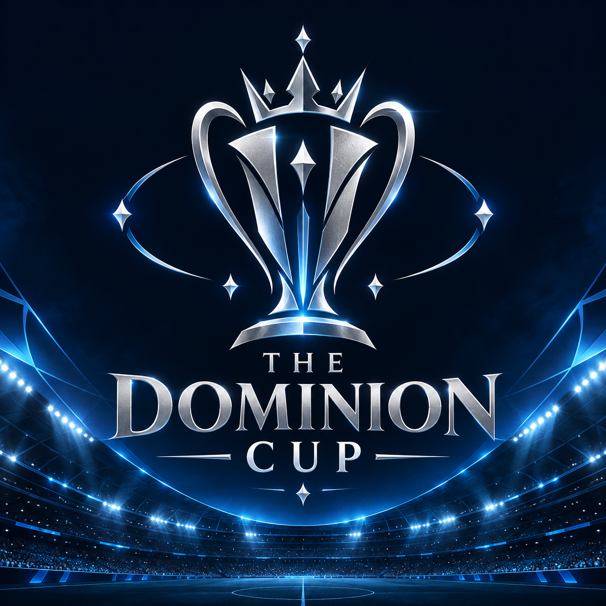
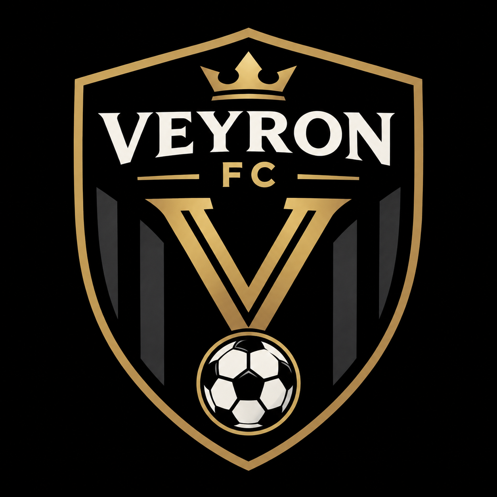

The Dominion Cup
| Place | Teams | Played | Win | Tie | Lost | Points |
|---|---|---|---|---|---|---|
| 1. |  Veyron FC |
2 | 2 | 0 | 0 | 6 |
| 2. | 2 | 1 | 1 | 0 | 5 | |
| 3. |  Crownvale Crownvale |
3 | 1 | 0 | 1 | 4 |
| 4. |  Northvale Northvale |
4 | 1 | 1 | 0 | 3 |
| 5. |  Blackridge FC Blackridge FC |
2 | 0 | 1 | 1 | 1 |
| 6. |  Valcrest Valcrest |
6 | 0 | 0 | 2 | 0 |